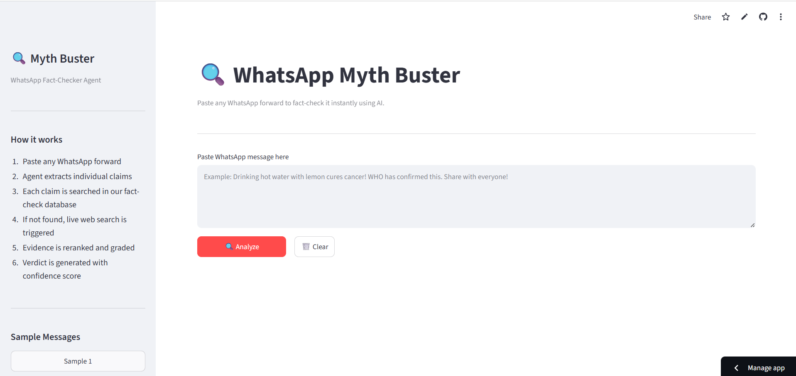
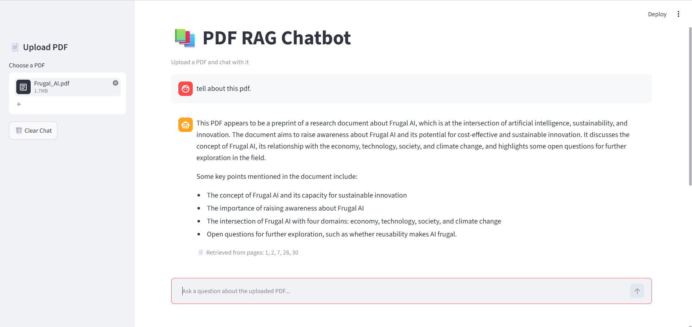
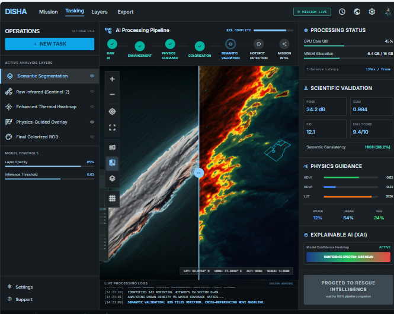
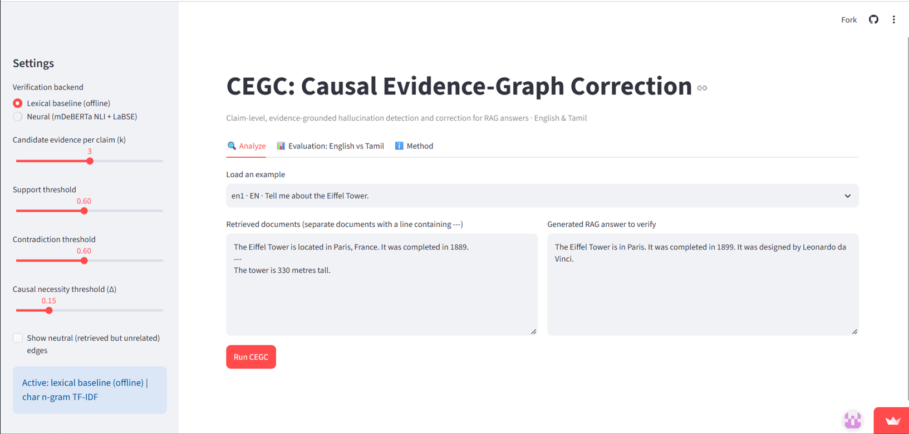

Backend Developer
Gowthami
I build backend systems in Java and Spring Boot, and spend my spare cycles wiring together retrieval-augmented AI systems — from a WhatsApp fact-checking agent to an IEEE research project on RAG hallucination correction.
About
I'm a Computer Science student in the CSE department at Velammal College of Engineering and Technology, currently preparing for SDE-1 roles at product-based companies — primarily Zoho. My core stack is Java and Spring Boot on the backend, with React on the frontend and a working comfort across relational and vector databases.
Alongside placement preparation, I've been building a portfolio of applied AI and NLP projects — mainly retrieval-augmented generation (RAG) systems — and I'm six months into an IEEE research project on detecting and correcting hallucinations in RAG pipelines. My longer-term interest is moving from backend engineering into applied AI/LLM systems work.
- Education
- B.E. Computer Science & Engineering, Velammal College of Engineering & Technology (2024–2028) · CGPA 8.92/10
- Focus
- Backend engineering (Java / Spring Boot) with applied AI / RAG systems
- Currently
- Preparing for SDE-1 placements · writing an IEEE paper on RAG hallucination correction
- Based in
- Madurai, Tamil Nadu, India
Skills
Programming
Web
Backend
Database
AI / ML
Tools
Projects

PDF RAG Chatbot
My first major AI project: a document-grounded chatbot with a repaired reranking pipeline, an evaluation dashboard for retrieval quality, a casual-conversation gate, and strict document-only prompting backed by LangSmith tracing.

DISHA — Disaster Rescue System
Built for the ISRO Bharatiya Antariksh Hackathon: an AI-powered disaster rescue concept using infrared satellite imagery, GAN-based colorization, super-resolution, and semantic segmentation to help locate survivors.

CEGC — Causal Evidence Graph Correction
A six-month IEEE research project on detecting and correcting hallucinations in RAG systems. Completed the Zeroth Review presentation; paper writing is underway.
Experience
-
2026
-
2025
Frontend Development Intern
Kevell Corp
Developed BuyNow, an e-commerce clone website, building out the webpage with HTML, CSS, and JavaScript and gaining hands-on frontend development experience.
Achievements
IEEE Zeroth Review Completed
Presented the Zeroth Review for CEGC, a RAG hallucination detection and correction framework, as part of a six-month research project.
124/124 Tests Passing
Shipped the WhatsApp Myth Buster Agent to production with a full pytest suite passing at completion.
Java Coding Round — Shield Winner
Won a shield in the Java Coding Round at a college symposium.
Smart India Hackathon
Participated in the Smart India Hackathon (SIH).
60+ LeetCode Problems Solved
Ongoing DSA practice as part of SDE-1 placement preparation.
Certifications
Java Programming (NPTEL) · Programming in C (NPTEL) · Python (Kaggle)
Resume
Download a copy of my resume for a full summary of my education, skills, and project experience.
Download Resume (PDF)